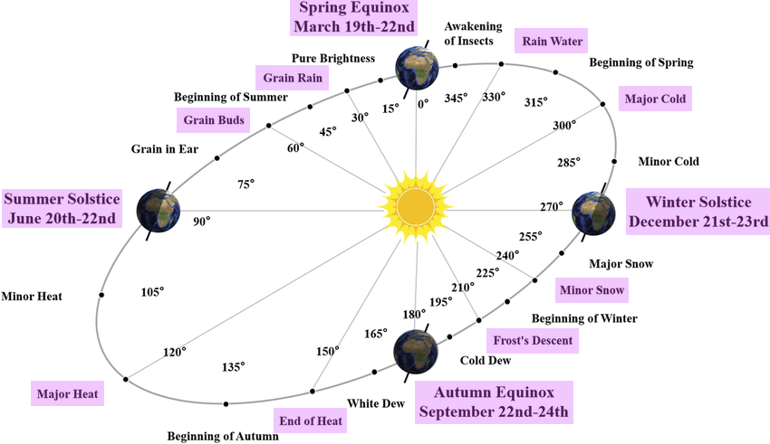

Background
Friday afternoon my manager sent out a message in our team channel wishing us a happy long weekend, since it's Presidents' Day in the States and Family Day in Canada (Monday, Feb 16, 2026). And coincidentally, Feb 16 is also 除夕 (Chinese New Year's Eve) of the year of the Snake. I was going to celebrate it, and I knew there were multiple teammates who would also be celebrating it, so I wanted to wish people a Happy New Year in the thread.
Now the question is, what should I say? I have a couple of options, but each sounds confusing -
I can say "Happy New Year". It's the most common and natural thing for me to say, and I will say this to my family and Chinese friends. But the thing is, there are many coworkers who don't see Feb 17 as a New Year's Day. For people outside the Sinosphere, Jan 1 was New Year's Day. If I say "Happy New Year", I'll confuse all non-Sinosphere coworkers.
I can also say "Happy Chinese New Year", but that's also confusing cuz e.g. Korean and Vietnamese people also celebrate it, but they are not Chinese. If I say "Happy Chinese New Year", I'll confuse all Sinosphere coworkers who are not Chinese.
I can also say "Happy Lunar New Year". This is widely accepted as the correct English translation in recent years. However, it bothers me, as the Chinese Calendar is not a lunar calendar - it's a lunisolar calendar (more on this later).
A purely lunar calendar, like the Islamic Calendar, strictly follows the moon's phase and does not add leap months to align the date with the season within a year. A whole cycle of a lunar year is approximately 354.37 days (29.53 * 12), which is about 11 days shorter than a 365-day solar year. As a result, the Islamic New Year day shifts 11 days earlier each year compared to the previous year.
In order to not have the shift year after year, the Chinese Calendar adds a leap month when the difference is too much, that's why the Chinese Calendar is not a purely lunar calendar.
Anyway, if I say "Happy Lunar New Year", I'll surely confuse myself, but my coworkers will understand what I mean. Small loss, big win. So I went with this one.I can actually also say "Happy Lunisolar New Year", but I don't want to sound like a pedant, so that's a big NO.
Then, after I posted "Happy Lunar New Year" in the thread, another coworker followed with a "Happy Ramadan"- it turns out, Feb 17 is the first day of the Lunar New Year as well as the first day of Ramadan.
Now this is interesting, so I decided to write this post about the Lunisolar Calendar.
Lunisolar Calendar
A lunisolar calendar is a calendar in many cultures, that combines monthly lunar cycles with the solar year. As with all calendars which divide the year into months, there is an additional requirement that the year have a whole number of months (Moon cycles). The majority of years have twelve months but every second or third year is an embolismic year, which adds a thirteenth intercalary, embolismic, or leap month.
Simply put, according to today's relatively accurate numbers, a lunar month is about 29.53 days, and a solar year is about 365.24 days. So a solar year is somewhere between 12 to 13 lunar months. And as described above, we need to add a leap month from time to time to align the lunar year and the solar year.
颛顼历
Our ancestors figured out in around 366 BC in 颛顼历 (the calendar of Zhuanxu) that 235 lunar months is about the same length as 19 solar years. But 19 solar years only have 19 * 12 = 228 months, so to make things align, we need to add 235 - 228 = 7 leap months every 19 years. That's the 十九年七闰 (7 leap in 19 years) rule.
颛顼历 is a type of 四分历 (the calendar of 1/4). 四分历 is named so because during that period of time in history, our ancestors believed one solar year was \(365\frac{1}{4}\) days, and so the number of days in a lunar month was calculated to be \(365.25 * 19 / 235 = 29\frac{499}{940} \approx 29.5309\). This is close enough to the numbers we calculate today, which are 365.2422 days a solar year and 29.5306 days a lunar month.
Meton of Athens also figured out the same pattern and introduced it in 432 BC, slightly earlier than the Chinese people.
However, with the accurate numbers we have today, 235 lunar months is 29.5306 * 235 = 6939.691 days, and 19 solar years is 365.2422 * 19 = 6939.6018 days. As one can see, 6939.691 is not THAT close to 6939.6018. The difference is 0.0892 days every 19 years, so it won't work well in the long long term.
太初历
And it was indeed discovered by people later that the date according to the calendar is almost a day off from the actual moon phase. That was why in 104 BC, about two centuries after 颛顼历 was put into use, it was proposed to the emperor that a new calendar should be made, namely 太初历 (the calendar of the very beginning).
The scientists (incorrectly) concluded that the discrepancy was caused by the number of days of a lunar month defined in 颛顼历 - \(29\frac{499}{940}\), which was too complex a number and there must be a better, cleaner number than that.
Chinese mathematicians back then had figured out mediant, namely that if \(\frac{a}{c} < \frac{b}{d}\), then \(\frac{a}{c} < \frac{a+b}{c+d} < \frac{b}{d}\). So to simplify the number of days in a lunar month, given \(\frac{26}{49} < \frac{499}{940}\) and \(\frac{499}{940} < \frac{17}{32}\) and \(\frac{26}{49} < \frac{26+17}{49+32} = \frac{43}{81} < \frac{17}{32}\), we know \(\frac{43}{81}\) is close enough to \(\frac{499}{940}\), and the numbers in the numerator and the denominator are much simpler, so they decided the number of days in a lunar month is \(29\frac{43}{81}\).
This new calendar is also called 八十一分历 (the calendar of 1/81) due to its denominator. Besides, 9 is an auspicious number in Chinese culture and is linked to royalty, and 81 is the square of 9, so the emperor was quite happy with this new calendar.
But alas. It actually had an even worse performance than the old calendar, since the difference between the actual number and the number it calculated is larger than the old calendar. It was abolished 188 years after it was introduced. But one good thing inherited from 太初历 was that each year starts in January, while the old calendars in the past started in October.
What I described above are just two examples in the Chinese calendar history. Up until now, we have had over 100 versions of different calendars. A more detailed record can be found in 历法通志. For now, I'll just introduce how the lunisolar calendar is defined today.
节气，中气，平气，定气，无中气置闰
That's a lot of 气... Let's go through it one by one.
节气 (Solar terms)
There are 24 solar terms in a year in the Chinese calendar, roughly 15-16 days apart. Each season has 6 solar terms, and they signify the different periods in a year.
中气 (Mid solar terms)
The even-numbered solar terms, i.e. the ones in pink background. There are 12 mid solar terms in a solar year.

I got the image from here.
平气 (Equal term method) and 定气 (Steady term method)
The two methods used to decide the time for each solar term.
Before 1645 AD, 平气法 (the equal term method) was used to determine the solar terms. It simply divides a solar year into 24 equal-length parts and assigns the solar terms accordingly.
However, according to Kepler's laws, the Earth does not travel around the sun at an even speed. This can be easily proven by the fact that there are about 88 days between the winter solstice and the spring equinox, but about 93 days between the spring equinox and the summer solstice. Therefore, with the help of western missionaries, 定气法 (the steady term method) came into play in 1645 AD, dividing the solar terms strictly based on the ecliptic longitude, i.e. 0° = 春分 (spring equinox), 15° = 清明 (clear and bright) etc.
无中气置闰 (add a leap month when there's no mid solar term in a lunar month)
Finally, on how leap months are added today:
The lunar month that includes the winter solstice is fixed as November. If there are 13 lunar months between this November and next year's November, then the first lunar month that does not contain a mid solar term is considered as the leap month of the previous month.
No more calculations are used. Everything is based on astronomical observations. I think it's pretty neat.
Conclusion
I hope this post helps you understand the Chinese Lunisolar Calendar. At least I learned a lot when researching.
It's now Feb 2026, and the next leap month will happen in 2028. It means that in 2027 and 2028, the Lunar New Year and Ramadan will also begin on the same day. And in 2029, 2030, and 2031, because of the leap month added, the Lunar New Year and Eid will fall on the same day - must be fun :)
Anyway, happy new year!
Reference
- 《古代天文历法讲座》 第七讲 by 张闻玉
- 古六历的计算方法